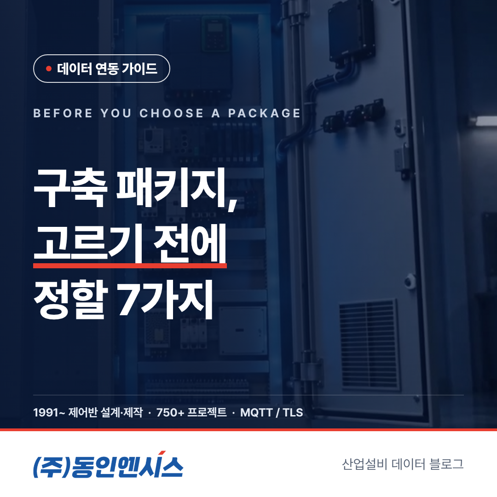
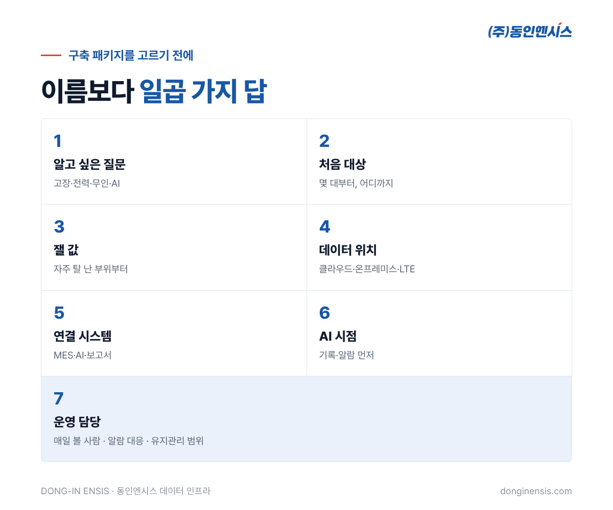
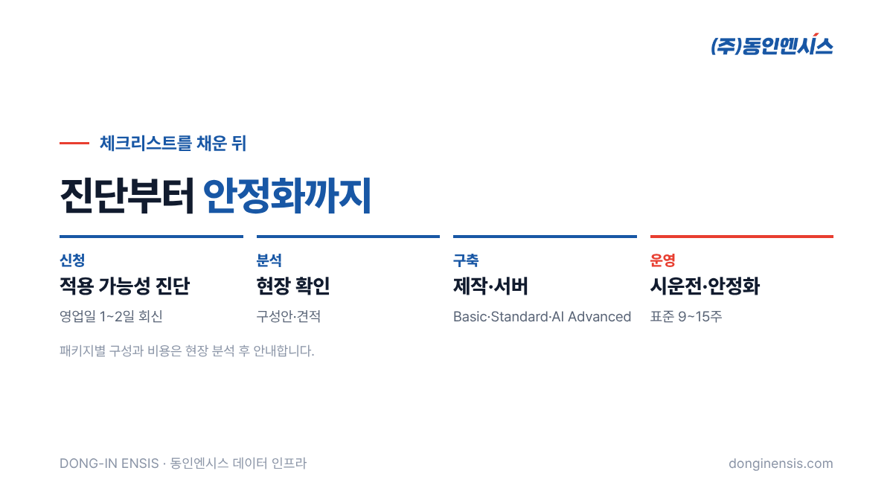

설비 데이터 시스템을 알아보다 보면 '패키지'라는 말을 자주 만나게 됩니다. 기본형, 표준형, 고급형처럼 단계별로 나뉜 구성입니다. 동인엔시스도 Basic, Standard, AI Advanced 세 가지 구축 패키지를 갖추고 있습니다. 그런데 패키지 이름부터 고르면 순서가 거꾸로 됩니다. 우리 공장이 무엇을 알고 싶은지, 어디까지 할 수 있는지가 먼저 정리되어야 맞는 패키지가 보입니다. 부산에서 제어반을 설계·제작하며 그 제어반을 데이터의 출발점으로 삼아 온 동인엔시스가, 설비 데이터 구축 패키지를 고르기 전에 정해 두면 좋은 일곱 가지를 체크리스트로 정리했습니다.
이 글은 설비 데이터 구축 패키지별 가격이나 구성을 안내하는 글이 아닙니다. 구성과 비용은 현장 분석을 거쳐 정해지며, 여기서는 그 분석을 빠르고 정확하게 만드는 준비 항목을 다룹니다.
같은 '표준형'이라도 펌프 두 대를 보는 공장과 송풍기 스무 대를 보는 공장에 필요한 것은 전혀 다릅니다. 비용을 좌우하는 것도 패키지 이름이 아니라 설비 수와 모터 용량, 수집 항목, 통신 환경, 기존 제어반을 바꿀지 여부 같은 현장 조건입니다.
그래서 상담에서 가장 먼저 묻는 것도 "어떤 패키지를 원하세요?"가 아니라 "무엇이 궁금하세요?"입니다. 아래 일곱 가지에 답을 적어 보면, 어느 설비 데이터 구축 패키지가 맞는지는 거의 자연스럽게 정해집니다. 반대로 이 질문들을 건너뛰고 패키지부터 고르면, 필요 없는 기능에 돈을 쓰거나 꼭 필요한 값을 빠뜨리기 쉽습니다.

각 항목 아래 질문에 '예/아니오'나 짧은 메모로 답해 보세요. 완벽하게 채우지 못해도 괜찮습니다.
질문에 따라 필요한 수집 항목과 화면, 보관 기간이 달라집니다. 질문이 여러 개라면 가장 급한 것 하나에 표시해 두세요. 첫 단계는 그 질문에 답하는 데 집중하는 편이 성공 확률이 높습니다.
처음부터 공장 전체를 하기보다 멈추면 가장 곤란한 설비 한두 대로 시작해 넓혀 가는 방식을 권합니다. 다만 나중에 넓힐 범위를 미리 알려 주시면, 처음 구성부터 확장을 고려해 설계할 수 있습니다.
제어반 한 대로 모을 수 있는 값은 열 가지 가까이 됩니다. 온도만 해도 권선 세 상과 베어링이 있고, 여기에 진동과 회전속도, 전기 쪽 값, 주변 온습도, 운전 상태가 더해집니다. 하지만 모든 설비에서 모든 값이 꼭 필요한 것은 아닙니다.
문제가 자주 생긴 부위의 값부터 챙기면, 같은 비용으로 더 쓸모 있는 데이터를 얻을 수 있습니다. 고장 기록 수첩이 있다면 상담 때 꼭 보여 주세요.
동인엔시스는 클라우드형과 온프레미스형을 모두 제공합니다. 앞의 방식은 사무실 밖에서도 휴대폰으로 상태를 확인하기 편하고, 뒤의 방식은 데이터가 회사 밖으로 한 번도 나가지 않는다는 점이 강점입니다. 인터넷 회선이 없는 현장은 LTE 장비로 연결하는 방법도 있습니다.
Photorealistic photo of a Korean factory manager in a light work jacket at a desk writing on a printed checklist form with blank checkboxes (no readable text) next to a laptop showing an abstract factory floor layout with colored equipment markers, coffee cup, factory office window behind, natural light, documentary style, no brand logos, no readable text. 3:2 landscape.
동인엔시스 데이터는 REST API와 WebSocket으로 다른 시스템에 넘길 수 있고, CSV로 내려받을 수도 있습니다. 연결할 시스템이 정해져 있다면 그쪽 담당자와 함께 기술 미팅을 잡는 것이 좋습니다. 연결 대상이 처음부터 분명하면 데이터 형식과 전송 주기를 그에 맞춰 정할 수 있어, 나중에 다시 손보는 일이 줄어듭니다.
지금 바로 쓰는 기능은 24시간 기록과 기준값에 따른 경고·알람입니다. 평소 모습을 스스로 익혀 작은 변화를 잡아내는 AI 기능은 아직 실증 단계에서 다듬는 중입니다. 많은 현장에서는 기록과 알람으로 시작해 데이터가 쌓인 뒤 AI 단계로 넘어가는 순서가 현실적입니다.
시스템은 들이는 것보다 쓰는 것이 더 중요합니다. 화면을 열어 보는 사람이 없으면 아무리 좋은 패키지도 쌓이기만 하는 기록이 됩니다. 동인엔시스는 원격 상태 확인과 정기 점검, 알람 기준 조정, 교육, 현장 대응까지 유지관리를 지원하므로, 내부 인력이 적다면 이 범위를 넓게 잡는 것을 고려해 볼 만합니다.

일곱 가지에 답을 적었다면 홈페이지에서 적용 가능성 진단을 신청해 주세요. 영업일 1~2일 안에 엔지니어가 회신하고, 필요하면 현장을 확인한 뒤 구성안과 견적을 드립니다. 표준 도입 일정은 현장 분석부터 시운전·안정화까지 9~15주이며, 현장 조건에 따라 달라집니다.
Photorealistic photo of a Korean engineer in a navy jacket and a factory staff member in a safety vest standing beside a row of blue pumps and an old grey control cabinet, the engineer taking notes on a tablet, industrial pump room, natural light, documentary style, no brand logos, no readable text. 3:2 landscape.
Q. 설비 데이터 구축 패키지별 가격을 알 수 있나요? 패키지 이름보다 현장 조건이 금액을 정합니다. 체크리스트에 적은 대상 대수, 수집할 값, 통신 상황, 기존 제어반을 바꿀지 여부를 보고 현장 분석을 거쳐 안내드립니다.
Q. 처음에 작은 패키지로 시작해도 나중에 넓힐 수 있나요? 데이터를 처음부터 같은 구조로 쌓기 때문에, 설비를 늘리거나 다음 단계로 넘어가도 기존 데이터와 화면이 그대로 이어집니다.
Q. 체크리스트를 다 못 채워도 상담할 수 있나요? 물론입니다. 모르는 항목은 비워 두셔도 현장 확인과 상담에서 함께 채워 갑니다.
좋은 패키지는 가장 비싼 패키지가 아니라 우리 공장의 질문에 딱 맞는 패키지입니다. 무엇을 알고 싶은지, 몇 대부터 시작할지, 데이터를 어디에 둘지 정해 두면 선택은 생각보다 쉬워집니다.
도입 상담 051-862-3668 · dongin@donginmne.com
아래 질문 중 하나에 실제 경험으로 답해 본문 적당한 곳에 넣어 주세요. 사람이 직접 쓴 문장이 들어가면 네이버에서 저품질 위험이 줄고 노출에 도움이 됩니다.